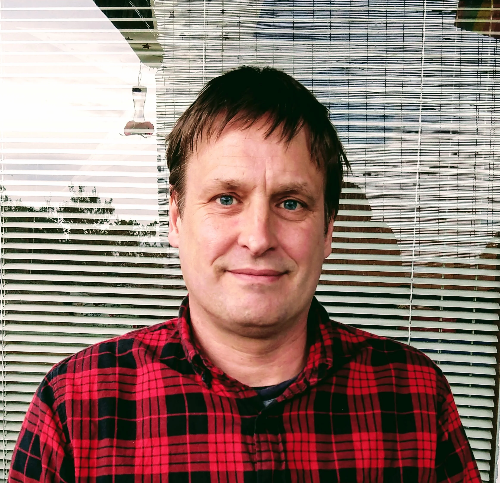
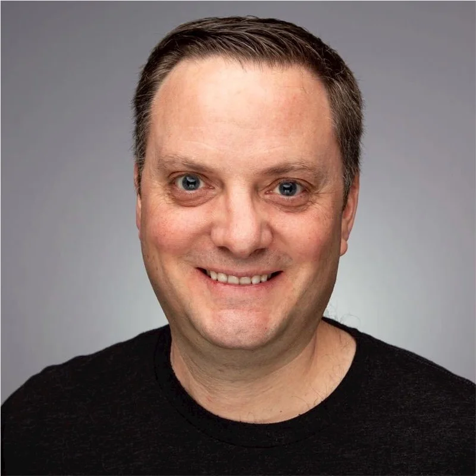
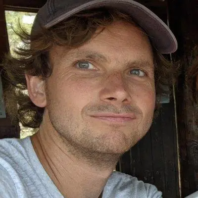

Governance
The primary mission of the R Consortium is to develop and implement infrastructure projects to support the R community. The R Community embraces principles of openness and collaboration as defined in our Code of Conduct.
Board of Directors
The business of the foundation is managed by its Board of Directors, composed of appointed Platinum members of the R Consortium, annually elected Silver members of the R Consortium, and the ISC appointed director as defined in the ByLaws (PDF).
David Smith
MICROSOFT (PLATINUM MEMBER)(R CONSORTIUM TREASURER)
David Smith is a developer advocate at Microsoft, with a focus on data science and the R community. With a background in Statistics, he writes regularly about applications of R at the Revolutions blog (blog.revolutionanalytics.com), and is a co-author of “Introduction to R”, the R manual. Follow David on Twitter as @revodavid
Michael Lawrence
R FOUNDATION (R FOUNDATION REPRESENTATIVE)
Michael is a scientist in the Bioinformatics and Computational Biology department at Genentech Research and Early Development (gRED), based in South San Francisco, CA. There he leads the development of tools, applications and environments for analyzing genomic data using R and Bioconductor. His research interests are in visualization, software interfacing, and genomic data manipulation. Michael is a member of the Bioconductor Technical Advisory Board, the R Core team, and the R Foundation Board.

Henrik Bengtsson
R FOUNDATION (R FOUNDATION REPRESENTATIVE) (ISC DIRECTOR)
Henrik Bengtsson is an Associated Professor at University of California, San Francisco, a member of the R Foundation, with a background in Computer Science and Mathematical Statistics. He has used R since 2000 for applied research in statistics and bioinformatics. He develops statistical methods, scientific computational software, and programming tools. His work includes R packages for science (e.g. matrixStats, and PSCBS, aroma.affymetrix) and software development (e.g. future, profmem, startup, and R.rsp).
Hadley Wickham
POSIT (PLATINUM MEMBER)
Hadley is Chief Scientist at RStudio, a member of the R Foundation, and Adjunct Professor at Stanford University and the University of Auckland. He builds tools (both computational and cognitive) to make data science easier, faster, and more fun. His work includes packages for data science (the tidyverse: including ggplot2, dplyr, tidyr, purrr, and readr) and principled software development (roxygen2, testthat, devtools). He is also a writer, educator, and speaker promoting the use of R for data science. Learn more on his website, http://hadley.nz.
Benjamin Arancibia
GSK (SILVER MEMBER REPRESENTATIVE)
Benjamin Arancibia, Director of Data Science, focuses on enabling the use of R in GSK Biostatistics. He builds tools to make data science fun, reproducible, and helps advocate for the use of R in the department. Ben is passionate about making sure that teams have the right support when using R in production analyses and helping teams learn while delivering. He is an advocate of R and open source technologies internally at GSK and externally speaking about lived experiences at various conferences.

Mike K Smith
PFIZER (VICE CHAIR, SILVER MEMBER REPRESENTATIVE)
Mike K Smith, Lead, R Centre of Excellence and Senior Director Statistics at Pfizer. Mike is a professional geek, helping colleagues from the business lines understand the power of reproducibility, automation and writing good code and helping the IT department understand the needs of the business lines. He is passionate about driving business outcomes through primary research, data and alternative data solutions as well as statistical analysis.
Uday Preetham Palukuru
MERCK (SILVER MEMBER REPRESENTATIVE)
Uday Preetham Palukuru is a Standards lead at Merck &Co., providing leadership to develop and maintain global standards for ADaM implementation, R package development, Open Source package qualification, Computing Platform enhancements and compliance management tools. He has contributed to various internal and external R packages and is a member of the R Validation Hub Executive committee. He actively promotes the use of open source software in clinical trial data analysis via forums and paper publications. He has a PhD in Bioengineering from Temple University.
Infrastructure Steering Committee
An Infrastructure Steering Committee (ISC) is responsible for the identification, selection, and oversight of infrastructure projects, as well as directing best practices and community leadership within the R community. Voting representatives are appointed by the Platinum and Silver members of the R Consortium, as well as an elected member from the Silver membership class and the project leads for all Top Level Projects as directed in the ISC Charter (PDF).
Henrik Bengtsson
R FOUNDATION (R FOUNDATION REPRESENTATIVE) (ISC DIRECTOR)
Henrik Bengtsson is an Associated Professor at University of California, San Francisco, a member of the R Foundation, with a background in Computer Science and Mathematical Statistics.
Yanina Bellini Saibene
rOpenSci, R-Ladies, Universidad Austral
Yanina Bellini Saibene is the Community Manager at rOpenSci and co-founder of LatinR. She serves on the Boards of The Carpentries and R-Ladies, and teaches at Universidad Austral. A GitHub Star (2022–2025), Yanina has received multiple national awards for her work in open data and digital agriculture.
Benedikt Schamberger
Swiss RE (SILVER MEMBER)
Benedikt leads actuarial AI & Technology consulting at Swiss Re, helping teams adopt R and open-source tools. He also leads a Posit-based internal analytics platform used by hundreds company-wide. He supports the R community by promoting best practices and delivering trainings for insurance and other financial professionals. He holds a MSc in mathematical finance and actuarial science from Technical University Munich.
Daniela Colombo
MICROSOFT (PLATINUM MEMBER)
Daniela Colombo is EMEA Enterprise Partner CTO and Sr. Director of Technology at Microsoft with in depth experience and knowledge about Data & AI and Applications.
Josiah Parry
ESRI (SILVER MEMBER REPRESENTATIVE) (ISC VICE CHAIR)
Josiah Parry is a Senior Product Engineer in Spatial Analysis and Data Science at Esri. He leads the R-ArcGIS Bridge project, bringing the ArcGIS system to the R community. A contributor to the extendr library, Josiah specializes in bridging R and Rust and is a package developer focused on building fast, scalable tools.

Jeroen Ooms
rOpenSci
Jeroen Ooms is the Lead Infrastructure Engineer at rOpenSci and creator of the R-universe platform. He is also a member of the Tidyverse team and maintains some of the most widely used R packages. Jeroen has PhD in statistics from UCLA and spent 10 years as a postdoc and research engineer at UC Berkeley.
Hannah Frick
POSIT (PLATINUM MEMBER)
Software engineer on the tidymodels team at Posit. Co-founder of R-Ladies Global and former co-organiser of the London chapter.

Kirill Müller
TOP-LEVEL PROJECT
Kirill runs the DBI project, a top-level project at the R Consortium, has previously been awarded five other projects, and is a core contributor to several tidyverse packages, including duckplyr, dplyr, and tibble. He is a founder and partner at cynkra, a data science consultancy based in Zurich.
Peyman Eshghi
JOHNSON & JOHNSON (SILVER MEMBER)
Senior Principal Technical Lead at Johnson & Johnson, with years of experience in R and data science, dedicated to advancing R in regulated industries by promoting robust, reproducible tooling, community collaboration, and best practices in package development and visualization.
Nikolas Kountouris
PFIZER (SILVER MEMBER)
Nikolas is a professional with a proven track record of successfully delivering projects and leading teams in the banking, consulting, technology and pharmaceutical sectors. He has worked in different environments and countries and has extensive experience in data science, data analytics and risk management (ICAAP, IFRS 9 and IRB).
Leadership
As a project operating within the Linux Foundation, the project staff from the Linux Foundation focuses on project growth and health, ensuring a vendor-neutral environment for collaboration.
Terry Christiani
EXECUTIVE DIRECTOR
30 years of building content strategies to help companies acquire and support customers. Successfully rebranded and created content programs to help build and sell 4 different companies. Built programs to identify and remedy content management issues affecting content performance. Managed outreach programs to open source communities through digital, hybrid, and IRL events.